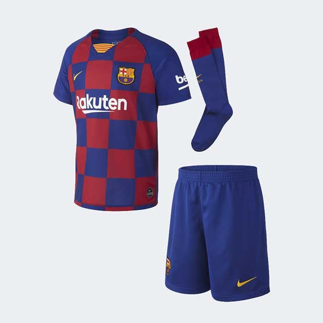
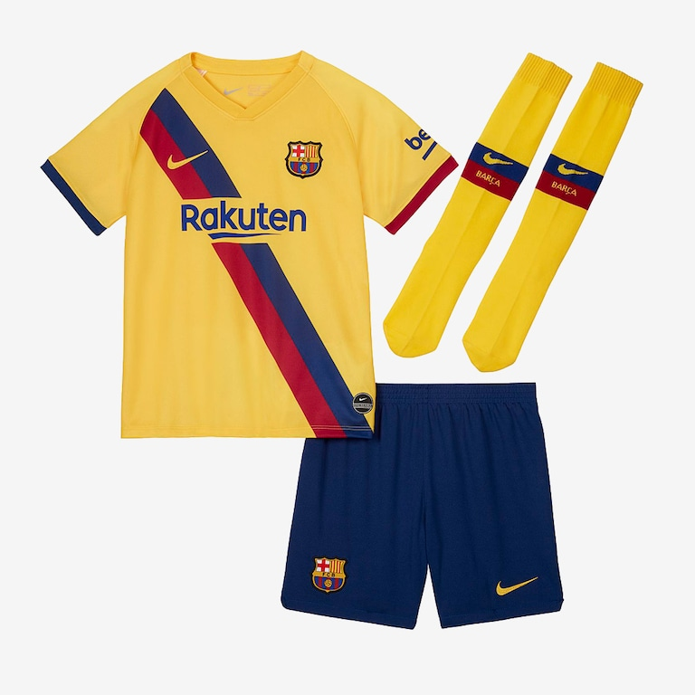
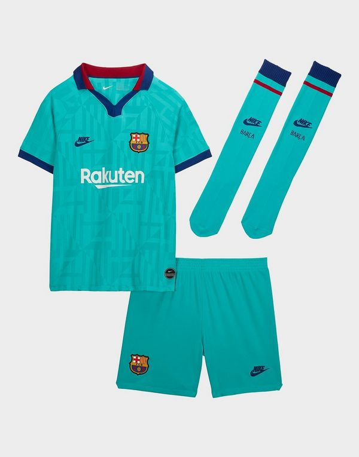

INDUMENTARIA
Los colores distintivos del F. C. Barcelona son el azul y el grana, de donde procede el sobrenombre de «azulgrana» («blaugrana» en catalán) con el que se conoce a los jugadores y aficionados del club. Existen diversas teorías sobre las causas que llevaron a los fundadores del club a escoger estos colores, aunque no hay ninguna que esté suficientemente contrastada como para ser considerada válida si bien la más extendida y documentada señala que fue el propio Hans Gamper, fundador del club, quien decidió los colores. De hecho, está comprobado que en el primer partido de fútbol que Gamper disputó en la ciudad de Barcelona antes de la fundación del club, ya vistió estos colores. Se afirma que Gamper escogió estos colores por ser los que identificaban al F. C. Basilea, equipo suizo en el que Gamper había jugado antes de llegar a Barcelona, ya que se había hecho socio del F. C. Basilea en 1896, vistiendo de azulgrana por primera vez tres años antes de fundar el Barça. La teoría que Joan Gamper se inspiró directamente en los colores de su antiguo equipo suizo a la hora de escoger los del Barça es una de las más razonables y fundadas, pero aun así no hay ninguna prueba documental que lo avale y por otro lado debe cohabitar con muchas más.En la reunión fundacional del F. C. Barcelona del 29 de noviembre de 1899, que se efectuó en la sala de armas del Gimnasio Solé, sobre el asunto de la elección de los colores azul y grana, Narciso Masferrer cita: Se trató extensamente del nombre y colores que adoptaría el club, quedando acordado, como título de la sociedad es de Football Club Barcelona y los colores los azul y grana, que son, sino estamos equivocados, los mismos del F. C. de Basilea, al que ha pertenecido hasta hace poco el ex campeón suizo Hans Gamper, nuestro estimado amigo. De la combinación de los colores azul y grana proviene el término "azulgrana". Estos colores siempre han estado presentes en la camiseta titular del equipo. Sin embargo, durante los diez primeros años de historia del club los pantalones fueron de color blanco, más tarde negros, y desde la década de 1920, azules. En la temporada 2005/2006 el equipo vistió pantalones color grana, algo inédito hasta el momento, debido a motivos comerciales. En la temporada 2011/12 la innovación en la primera equipación es que la camiseta tiene las rayas verticales más finas de la historia. El equipo dispone de uniforme alternativo o segunda equipación a nivel oficial desde el año 1913, cuando se eligieron el color blanco para la camiseta y el azul para los pantalones. Esta equipación duró más de sesenta años, hasta la temporada 1975/76, en la que entró en escena una camiseta amarilla con una franja azulgrana en diagonal. Fue variando en colores como el amarillo, el azul o el rojo, en las diferentes camisetas con una franja vertical azulgrana en su lado derecho hasta que a partir de la temporada 1998/99 Nike se convirtió en el proveedor eligiendo una amplísima gama de colores desde entonces. En noviembre de 2012, el club informa que, como parte de su acuerdo con Qatar Sports Investment, la aerolínea Qatar Airways sustituirá a Qatar Foundation como patrocinador principal en la camiseta desde la temporada 2013/14.
TITULAR
.
VISITANTE
.
TERCERO
.